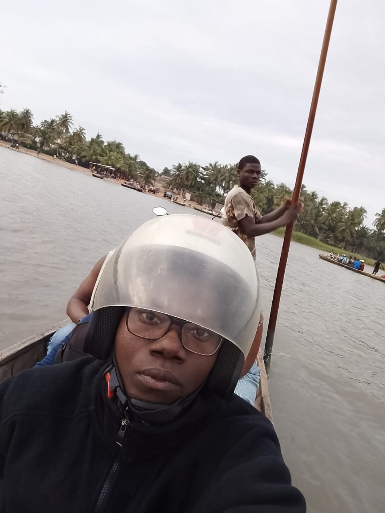
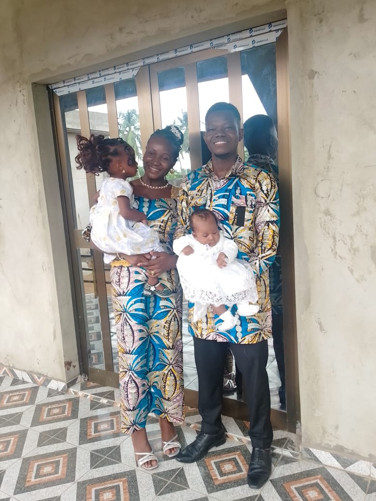

Évangélisation & implantation d'églises
Campagnes d'évangélisation, visites, prières, implantation d'assemblées et formation des responsables locaux.
Soutenir cette action ↗Porter l'Évangile de Jésus-Christ, servir les communautés et transformer les vies — au Togo et, avec le temps, dans d'autres nations.
Mission Source d'Espoir (MSE) est une œuvre missionnaire chrétienne née au Togo, avec une vision tournée vers les nations.
Nous croyons que chaque personne mérite d'entendre la Parole de Dieu, de vivre dans la dignité et de bénéficier d'un accompagnement adapté à ses besoins. Notre engagement associe évangélisation, formation spirituelle et solidarité humaine.
Découvrir notre histoire →Porter la Bonne Nouvelle de Jésus-Christ jusqu'aux villages et aux peuples.
Faire des disciples, accompagner les responsables et implanter des églises.
Répondre aux besoins essentiels avec compassion et respect.
Préparer progressivement l'extension de la mission au-delà du Togo.
Votre soutien contribue à faire avancer ces initiatives auprès des populations rurales et des communautés dans les territoires où la mission interviendra.
Campagnes d'évangélisation, visites, prières, implantation d'assemblées et formation des responsables locaux.
Soutenir cette action ↗Distribution de Bibles imprimées, ressources audio et outils bibliques dans les langues locales.
Soutenir cette action ↗Projections de films bibliques, sensibilisation, échanges, prières et accompagnement.
Soutenir cette action ↗Recherche de terrains, location de lieux de culte, construction de chapelles et équipements.
Soutenir cette action ↗Accompagnement des personnes malades, des personnes âgées et des familles vulnérables.
Soutenir cette action ↗Identification des besoins, recherche de partenaires, réalisation de forages et installation de pompes.
Soutenir cette action ↗Frais de scolarité, fournitures et accompagnement des enfants orphelins ou défavorisés.
Soutenir cette action ↗Distribution de vivres, soutien aux familles démunies et initiatives d'autonomisation locale.
Soutenir cette action ↗Des images pour présenter l'engagement de la mission et les besoins auxquels elle souhaite répondre.



La première photo a été fournie par MSE. Les autres images sont des illustrations et ne représentent pas nécessairement des projets déjà réalisés par la mission.
Au cours de leurs interventions, les équipes rencontrent des communautés confrontées au manque de ressources et à des difficultés quotidiennes. Ensemble, nous pouvons contribuer à des réponses concrètes, adaptées aux réalités locales.
Répondre à un besoin →Le Togo est le point de départ de notre engagement, pas la limite de notre vision.
Avec le temps, selon les moyens, les partenariats et les orientations de la mission, MSE aspire à étendre ses actions dans d'autres pays et à servir des communautés au-delà de ses frontières actuelles.
Nous souhaitons construire des partenariats avec des Églises, des organisations missionnaires et des personnes de bonne volonté partout dans le monde.
Devenir partenaire international →« Allez, faites de toutes les nations des disciples […] et enseignez-leur à observer tout ce que je vous ai prescrit. »MATTHIEU 28.19-20

Le couple fondateur et leur familleMission Source d'Espoir est portée par le Pasteur missionnaire AYIVON Kanyi et son épouse Amen, un couple togolais engagé dans l'œuvre de Dieu.
Ensemble, ils souhaitent annoncer l'Évangile, faire des disciples, implanter de nouvelles églises et manifester concrètement l'amour du Christ à travers des actions sociales et humanitaires.
Ils lancent un appel aux Églises, aux partenaires missionnaires, aux organisations chrétiennes et à toutes les personnes de bonne volonté afin qu'elles deviennent partenaires de cette vision.
Votre générosité peut contribuer à apporter la Parole de Dieu, soutenir un enfant, accompagner une famille, aider une personne malade ou améliorer l'accès à l'eau potable.
Chaque contribution compte. Chaque geste peut faire une différence.
Choisissez un moyen de contribution. Le site vous indiquera les étapes à suivre et vous permettra de transmettre les détails du don à la mission.
Important : les transferts Flooz, Mixx et bancaires sont effectués par le donateur depuis son application ou sa banque. Le site ne débite pas votre compte et ne confirme pas automatiquement la réception. Les paiements par carte et cryptomonnaie seront activés après configuration d'un prestataire et des coordonnées officielles.Indiquez votre contribution pour afficher les instructions et prévenir la mission.
Pour Flooz, Mixx et le virement, effectuez vous-même le transfert avec votre application ou votre banque. WhatsApp sert à transmettre les détails et demander confirmation ; il ne déclenche pas le paiement.Églises, partenaires, bénévoles et amis de la mission : prenez contact avec nous pour échanger sur les possibilités de collaboration.
Base actuelleTogo · Afrique de l'Ouest